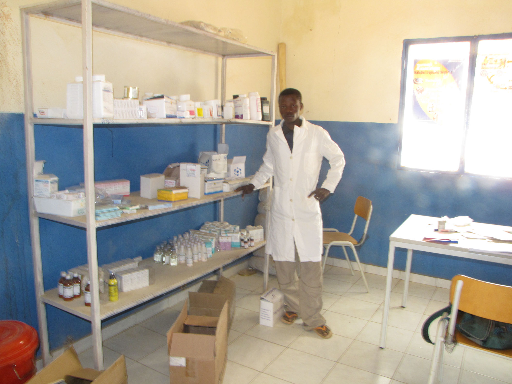
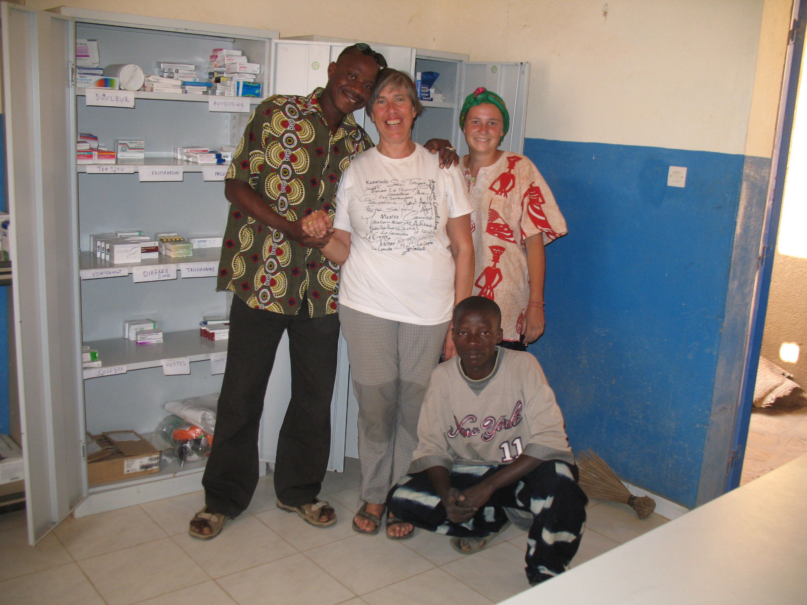

O.R.U.A.M. è anche impegnata sul versante sanitario nell’area maliana dei Dogon e , in
particolare, nel villaggio di Yendouma, assicurando il buon funzionamento dell’ambulatorio sanitario presente.

Il supporto della sanità locale può impattare centinaia di vite umane
Nel 2007 è stato realizzato a Yendouma il Centro di Sanità Comunitario CSCOM. La costruzione era già presente ma mancavano i permessi, alcuni arredi e il materiale di consumo.
L’infermeria era ospitata in una stanza piccola a piano terra vicino alla scuola primaria. L’Associazione si è fatta carico dell’iter dei permessi, ha visitato e contattato il medico provinciale e si è occupata dell’iter della fornitura delle medicine base dai depositi provinciali e dell’attivazione della fornitura dei vaccini pediatrici dell’UNICEF.
Il CSCOM ha ora un medico, fino a poco tempo fa un infermiere specializzato con funzioni mediche e un farmacista di livello base, regolarmente assunti.
Nel 2012 abbiamo fornito il CSCOM di un buon impianto elettrico grazie all’acquisizione di
batterie e pannelli solari; abbiamo anche acquistato un frigorifero nuovo per i vaccini.

Volontari nell'ospedale costruito da O.R.U.A.M.
This site was designed with Mobirise